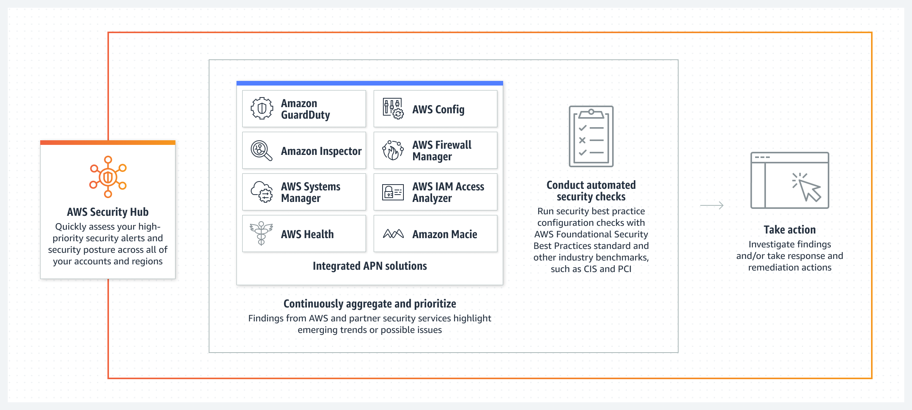

Beschreibung
AWS Security Hub spielt eine zentrale Rolle beim Sammeln von Sicherheitswarnungen und der Durchführung von Infrastruktur-Sicherheitsüberprüfungen in der AWS-Cloud.
Als zentraler Knotenpunkt aggregiert, organisiert und priorisiert er Sicherheitsereignisse aus diversen AWS-Diensten, darunter Macie.
Der Service bietet folgende Hauptfunktionen:
AWS Security Hub sammelt Sicherheitswarnungen aus verschiedenen Quellen, einschließlich AWS-Diensten wie Macie, und ermöglicht eine übersichtliche Anzeige sowie Verwaltung der Sicherheitsinformationen.
Es löst Sicherheitsüberprüfungen der AWS-Infrastruktur aus, beispielsweise durch Watchdog-Aufgaben, um bekannte Sicherheitsprobleme oder Konfigurationsfehler zu identifizieren.
Durch die Unterstützung der Automatisierung von Sicherheitsmaßnahmen können aufgrund erkannter Sicherheitswarnungen oder -probleme automatisch Maßnahmen ergriffen werden. Dadurch verkürzt sich die Reaktionszeit auf Sicherheitsvorfälle, und vordefinierte Aktionen werden sofort ausgeführt.
Insgesamt bietet AWS Security Hub eine konsolidierte Ansicht der Sicherheitslage in Ihrer AWS-Umgebung. Durch die Automatisierung von Sicherheitsmaßnahmen können Sicherheitsvorfälle schneller erkannt und darauf reagiert werden.
Schlüsselwörter
> > > Schlüsselworte bzw. Schlagworte sollen uns dabei helfen, einen Service leichter zu erkennen, wenn es um Prüfungsfragen geht. Ließ dir die Fragen richtig durch und achte auf folgende Schlüsselworte. Sie können dir bei der Beantwortung der Fragen helfen.
- Container-Orchestrierung: ECS ermöglicht daren von Docker-Containern in der AWS-Cloud.
- Container-Definitionen: Definition von Containber die Verwendung von Aufgaben (Tasks) und Services.
- Docker-Integration: ECS unterstützt Docker-Container und ermöng von Docker-Images.
- Task-Definitionen: Spezifikationen, wie eine Aufgabe (Task) in einvon Services, um langfristig laufende Anwendungetartet und Aufgaben ausgeführt werden.
- Auto Scaling: Automatische Anpassung der Anzahl von las basieinierbaren Metriken.
- Load Balancing: Integration mit dem Elastic Load Balancing-Dienst für die Lr.
- AWS Fargate: Option zur Ausführung von Containern ohne die Notwendigkeit, EC2.
- Integration mit Amazon ECR: Nahtlose Integration mit d
Grafische Erklärung
Prüfung Fragen
- Was ist die Hauptfunktion von AWS Security Hub?
- Welche Art von Informationen bietet AWS Security Hub hauptsächlich?
- Welche Vorteile bietet AWS Security Hub den Benutzern?